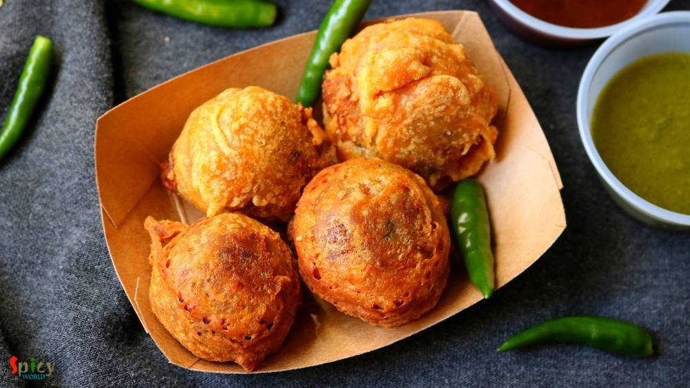

Simple and Easy Recipes
Posts on 'snack'

Nonveg Recipe
Mar 31, 2020
Chicken Bhuna is a popular Indian chicken dish all around the world. Bhuna means slow cooking with oil and spices. Bhuna Chicken is considered as a main course item. In Kolkata Kathi rolls are very popular street food item. You can get various kinds of rolls like Egg roll, Chicken kabab roll, Mutton roll, Paneer roll etc. They all tastes delicious. I punched the two ideas and created this Bhuna Ch ...


Veg Recipe
Jan 7, 2020
Nimki / Namak pare is a crispy, crunchy, flaky, savory snack. In Bengal, we call them Nimki. In other parts of India, they also known as Namak pare, Nimkin, Namkin, Matrii etc. The recipe calls for very few ingredients, one of them is all purpose flour or maida. To make a batch of crunchy Nimki all you need is proper proportion of ingredients and little patience while frying them. Do give this a t ...

Veg Recipe
Jul 9, 2019
Aloo tikki means Potato cutlets. Aloo tikki chaat is a mouth watering snack from North Indian cuisine. Main trick about this recipe is to make crispy and crunchy tikkis. If they become soggy, the chaat will not come out that tasty. Usually these tikkis are served with Chana masala (chickpea curry), Yogurt, Tamarind chutney, Green chutney and Sev. Do give this recipe a try and let me know how it tu ...

Nonveg Recipe
May 10, 2019
You don't have to be an expert to make this easy and simple grilled chicken and cheese sandwich! This chicken and cheese sandwich recipe is my family favorite. From younger to elder everybody love the taste and texture of it. For the flavor I marinated the chicken with some Tandoori masala and the taste came out really good. Do give this recipe a try and let me know how it turned out for you.

Veg Recipe
Apr 16, 2019
After marriage during my stay in India, I was a fan of my MIL's Kanchkolar Chop. She used to make them at least once in a week in the evening. Anything batter fried or crumb coated is either Chop or Cutlet to Bengali, like Alur Chop, Mochar Chop, Enchorer Chop, Macher Chop. The taste of her Raw Banana Fritter was so much better than the street shop's ones. Adding chopped onion, coriander leaves an ...
")
Nonveg Recipe
Dec 14, 2018
I am a very fast food loving person. During college life there was hardly any day I skipped fast food. Be it simple 'phuchka' (panipuri) or heaviest roll, I was always in ! Surprisingly after my marriage I have taken a lot of control over my food habit, I have become more conscious now. But that doesn't mean I can't eat fast food once in a week .. hell I can ! ?? When I made these yummy 'egg chi ...

Veg Recipe
Nov 4, 2018
Paneer Pakoras are delicious crispy vegetarian appetizer which can be served with mint or tamarind chutney and a cup of strong tea. I cut the paneer cubes from the center and filled it with green chutney as paneer has a bland taste. The recipe is very simple and easy. Your kids will love these Paneer Pakoras. Enjoy the recipe with detailed video.

Veg Recipe
Oct 16, 2018
In Bengal, Durgapujo is incomplete without Ghugni. During pandal hopping one of the best selling street food after phuchka is Ghugni. Not only as a street food, on the auspicious day of Bijoya Doshomi (last day of durga pujo) Ghugni along with Nimki and Naru is served in every household of West Bengal. Ghugni is a yellow peas curry with few chunks of potato although many people add chopped fried c ...

Veg Recipe
Sep 25, 2018
Paneer Kathi Roll is loved by both vegetarian and non vegetarian people all across India. Paneer Frankie or roll is nothing but stuffed wrap, cooked paneer cubes with some onion slices and green chutney will be stuffed inside a cooked flour paratha. It will be easy for you if you divide the recipe in 3 parts - making stuffing, making paratha, assembling the rolls. You can serve this as evening sna ...

Nonveg Recipe
May 23, 2016
Last week I was thinking that my blog doesn't have the recipe of 'mangsher ghugni' and being a Bengali I felt very awkward. There is no Bengali in the world who doesn't know about this dish ... yes, 'mutton ghugni' is that much famous. On special occasions or guest's arrival in evening, 'mangsher ghugni' is a very common item we Bengalis make. It's a Indian version of 'chili'. We make the curry of ...

Veg Recipe
Aug 27, 2018
A cup of tea and some vegetable cutlets .... do you need anything more to spend a winter or rainy evening ?? I am always up for this kind of evenings. These cutlets are very much available in Kolkata. I guess, almost nobody makes vegetable cutlets at home in Bengal. On any occasion or just to enjoy some snacks, these chops were always bought from 'telebhajar dokan' / fast food center in my home. B ...

Nonveg Recipe
May 24, 2018
I am one true lover of rolls, be it an Egg roll or Chicken roll. I know many of you do also. But fact is it's always better to have home cooked food than consuming street food, here everyone has one common complain about that - taste is not the same yaar ! right ? Being a crazy fast food lover I can guarantee you that this is one top notch recipe of Butter Chicken Roll. I've combined two best idea ...

Nonveg Recipe
May 20, 2016
Every place in this world has their own tea stalls and also some unique dishes. You can never match the taste of tea stall's food with big restaurant's food ... a huge difference ! One of the famous item of those stalls in India is 'toast'. You can get so many types of toast from them like 'butter toast', 'french toast', 'plain toast' etc. I love to eat 'dim pauruti' or in fancy words 'savory fren ...
 / Cauliflower Fritters")
Veg Recipe
Feb 8, 2016
We Indians are crazy about 'pakore' .. don't you think so ?? We make fritters out of almost everything - 'potato', 'eggplant', 'okra', 'cabbage', 'chili', 'lentils', 'chicken', 'fish' and so many more ?. 'He' adores only two vegetables in his life, one is potato and the other one is cauliflower. You can impress him with any type of cauliflower dish. So, is there any doubt about what I'm talking a ...
")
Nonveg Recipe
Oct 14, 2015
This is one of my favourite snacks in the evening along with tea. You can get this chop from many fast food centers in West Bengal. But today you can make this Bengali style macher chop in your own kitchen. Just follow the recipe and you will get this mouth watering snack very easily.
")
Veg Recipe
Sep 26, 2015
According to me comfort food means hot plain rice, lentil soup (daal), one lemon slice, mashed potato with fried onion, one green chili and lots of 'red lentil fritters'. I know every person has their own comfort food. But isn't it become more comforter when your mom serve this plate with her love and care. It definitely is. I learned this recipe from her. Just give it a try.